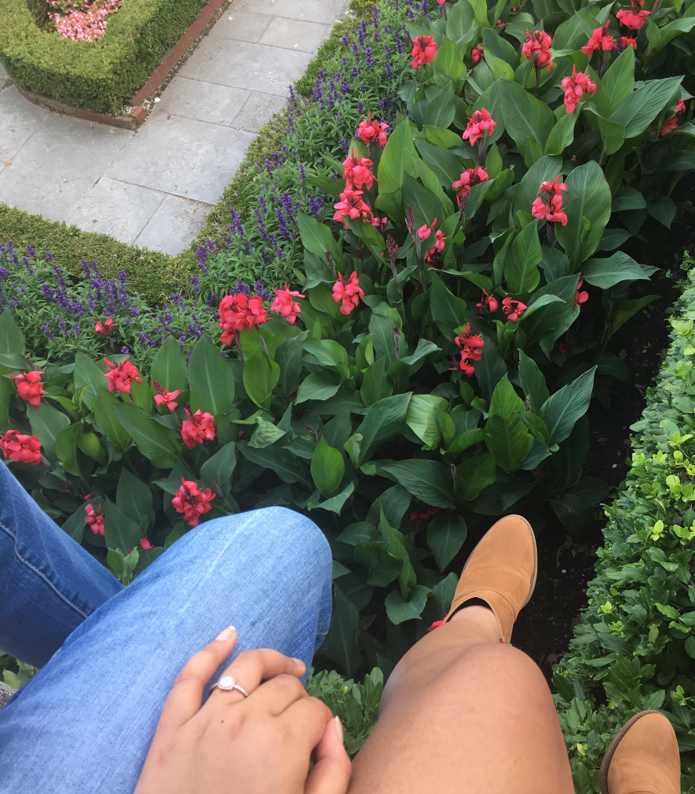

yunesta soedarmasto
Yunesta Soedarmasto is a 22 year old freelance writer from Queens, New York, who moved to London, Ontario when she was just 7
years old.
She has worked for many publishing companies such as Unwritten, Pizzabottle, and Dipley.
She has had pieces published in the Huffinton Post and has had an article shared by George Takei on facebook!
She has managed the social media accounts of companies such as Fierce Magazine and Under the Labels.
Yunesta spent some time studying communications at McMaster university in Hamilton but preferred being at home
in London with her family. She transferred to Western University in 2016 and is finishing her degree in 2018.
